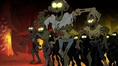

| Número | Título | Imagen | Estreno |
| 1 | "Karaoke Zombi" |  | 5 de Octubre de 2014 |
| 2 | "Visita al refugio" | 12 de Octubre de 2014 | |
| 3 | "La guerra del Golf" | 19 de Octubre de 2014 | |
| 4 | "Amor sin Calcetas" | 26 de Octubre de 2014 | |
| 5 | "Soos y la Chica Real" | 15 de Noviembre de 2014 | |
| 6 | "La Tiendita de Regalos del Horror" | 22 de Noviembre de 2014 | |
| 7 | "La Sociedad del Ojo Cegado" | 29 de Noviembre de 2014 | |
| 8 | "El Juego de Blendín" | 22 de Febrero de 2015 | |
| 9 | "Cupido" | 1 de Marzo de 2015 | |
| 10 | "El Misterio de la Mansión Noroeste" | 7 de Abril de 2015 | |
| 11 | "Él no es lo que parece" | 21 de Junio de 2015 | |
| 12 | "La historia de los dos Stan" | 21 de Octubre de 2015 | |
| 13 | "Calabozos, Calabozos y Más Calabozos" | 19 de Octubre de 2015 | |
| 14 | "Un Candidato Nada Stan-dard" | 20 de Octubre de 2015 | |
| 15 | "El Último Mabelcornio" | 23 de Octubre de 2015 | |
| 16 | "Atracciones de Carretera" | 22 de Octubre de 2015 | |
| 17 | "Dipper y Mabel versus el Futuro" | 26 de Octubre de 2015 | |
| 18 | "Raromagedón: Parte 1" | 15 de Mayo de 2016 | |
| 19 | "Raromagedón 2: Escape de la Realidad" | 21 de Mayo de 2016 | |
| 20 | "Raromagedón 3: Recuperar El Pueblo" | 28 de Mayo de 2016 |